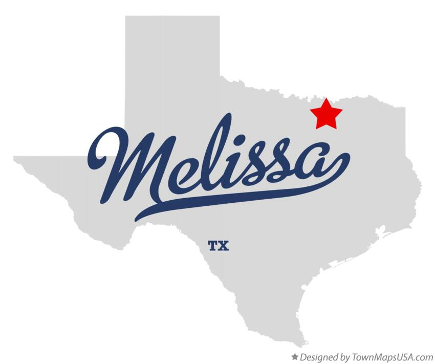
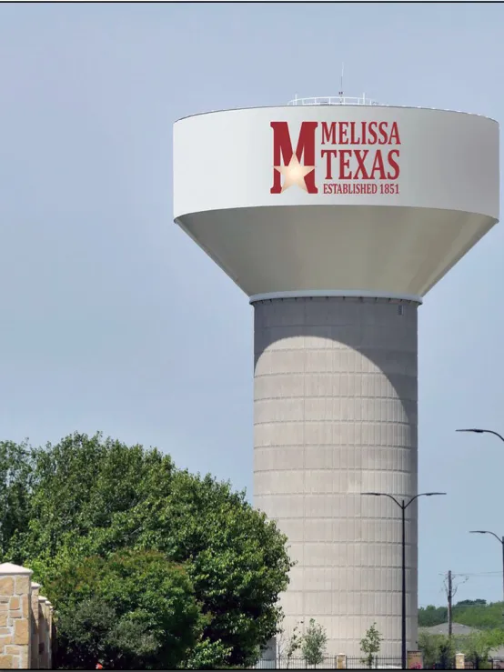

Melissa Texas was established in 1851 when the Housotn and Texas Central Railroad was built through the area and is likely named after the daughter of a railroad executive, Melissa Quinlan.
I love Melissa becasue it is far enough out of the city to not be too busy or crazy, but close enough to visit.
 